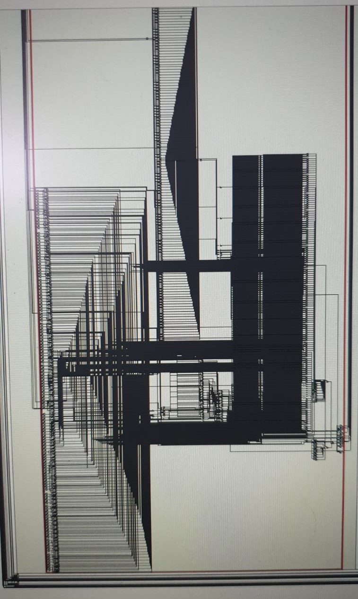

Custom ISA CPU Project
Overview
This was a group project in a team of three, where we were given three snippets of C code:
- A recursive fibonacci generator function
- A random number generator (Linear Congruential Generator)
- A linked-list traversal function
We were tasked to design an ISA and CPU that efficiently perform the same tasks defined in the 3 functions above. The CPU would be designed and simulated in Intel Quartus Prime to target an Altera FPGA.
Design
In this project I had focused on analyzing the recursive fibonacci function and making our custom CPU execute it efficiently. Seeing that this function involves a large number of recursive calls to itself, I took inspiration from the SPARC architecture to design the CPU with a large register file and movable register window.
SPARC CPUs usually have hundreds of registers, with only 32 being made visible to the program through a register widow. When a function call is made, arguments are placed by the caller on the bottom of the register window, which then moves down by a certain amount during the function call such that these arguments appear at the top. This is then replaced with the return value by the callee, before the window moves back up when the function returns. (See the below video for a demonstration of how this works)
I decided to use a register file with 128 registers, with a window size of 8. This would be accompanies by an ISA that supports 8 registers, as well as `call` and `rtn` instructions that move the register window up or down by a specified amount. I believe SPARC could have done better by allowing the programmer to specify how much the window should move up/down by, which would allow a compiler to optimize for maximum depth of function calls before spilling registers to memory, assuming less registers are needed per function.
After synthesizing the CPU for the FPGA, I found that the critical path was included reading values from the register file, because several layers of muxes were needed to select the correct registers. This was limiting the maximum clock speed and hence I decided to add a small (L-1?) cache just for these 8 registers that are updated whenever a register is written to or when the register window moves. Admittedly this design may not be the most friendly to synthesize, with the register file looking as follows:
Nevertheless the design is efficient in running this snippet of code. I found that it uses less instructions to calculate a fibonacci number compared to arm CPU (tested on a Raspberry Pi 3). This is also shown in the following video where I briefly explain how the movable register window works in our CPU, and give a short demonstration of it being used when calling a recursive function.